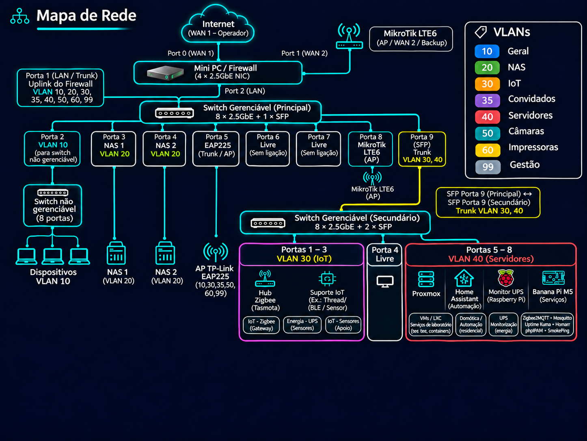
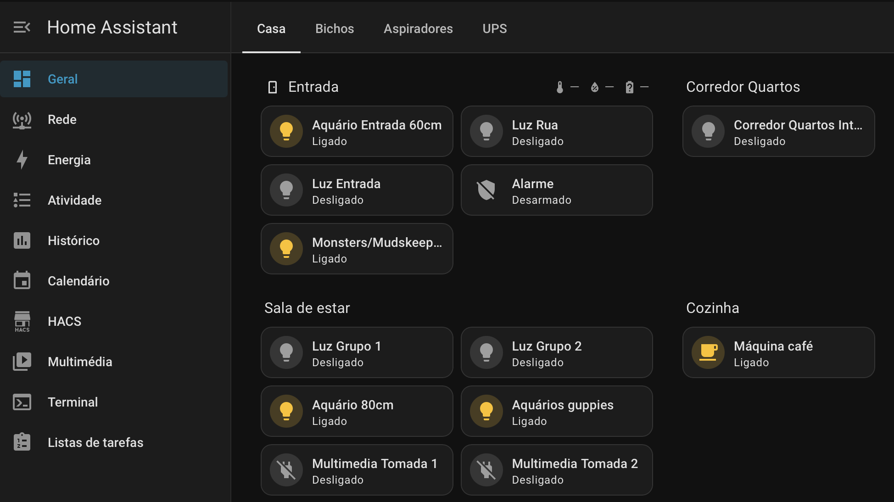
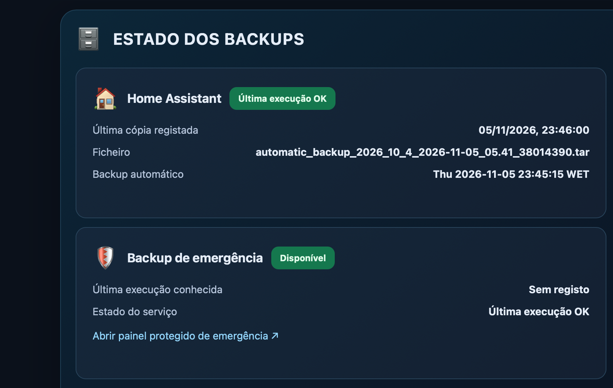

Visão geral
O Home Lab permite experimentar tecnologias utilizadas em ambientes reais, criar serviços de teste e aperfeiçoar processos de diagnóstico e manutenção. Integra sistemas de rede, virtualização, armazenamento, backups e automação.

Componentes principais
Rede e segurança
Switches geríveis, VLANs, segmentação e acesso controlado.
Explorar →Servidores e VMs
Virtualização, serviços e ambientes de teste.
Explorar →Automação
Home Assistant, MQTT, Zigbee e integração local.
Explorar →Painel de serviços
Acesso rápido aos serviços mais utilizados.
Explorar →Banana Pi M5
Containers Docker, Zigbee, monitorização e gestão da rede num servidor compacto.
Explorar →O laboratório fora do ecrã
Por detrás dos dashboards existe uma instalação física feita de pequenos computadores, switches, fontes de alimentação e muitos cabos. A fotografia mostra uma parte do ambiente real: uma infraestrutura compacta, montada para ser acessível e permitir alterações sem desmontar tudo.
Neste tipo de projeto, a organização física também conta. Manter os equipamentos agrupados, identificar as ligações e deixar espaço para ventilação e manutenção faz tanta diferença como uma boa configuração da rede.

Capturas do ambiente




Exemplo prático
Separar funções na infraestrutura
- Criar segmentos de rede distintos para equipamentos de utilização diária, servidores, dispositivos IoT e gestão.
- Aplicar regras de acesso adequadas entre segmentos.
- Monitorizar o estado dos serviços e manter backups das configurações importantes.